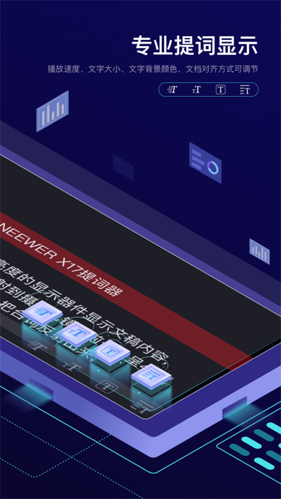
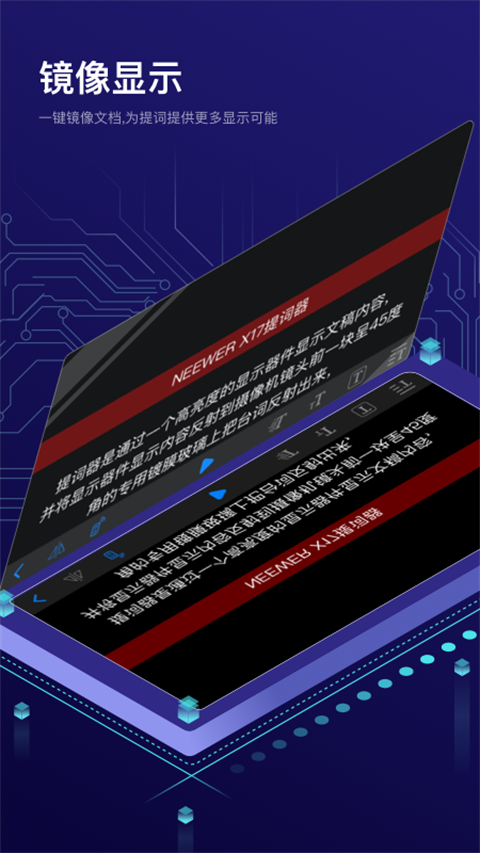
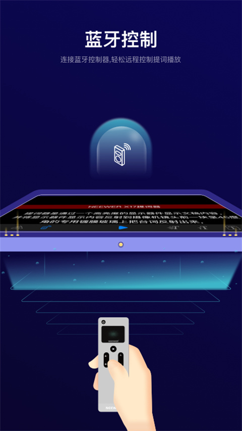

Teleprompter 是 NEEWER 推出的安卓提词应用：台本导入、滚动播放、镜像显示、蓝牙遥控都在一台手机里完成。没购入提词器硬件，单机读稿照样能用。
安装包 20MB 出头，Android 6.0 及以上可装。
以下界面素材来自该应用的公开资料。



从把稿子弄进手机，到隔着玻璃把稿念顺，每一环都有对应的开关。
应用内直接新建编辑；稿子在电脑上走 WiFi 导入（.txt / .doc / .docx）；多台设备用云文件夹同步。
滚动速度、文字大小、文字与背景颜色、对齐方式都能在播放时直接改，建议每篇开拍前花一分钟过一遍。
文字要经过提词器玻璃反射一次才进眼睛，应用里先翻转一次，隔着玻璃看到的才是正字。
RT-110 / RT111 / RT113 遥控器在镜头外静音操作：播放暂停、字号增减、速度加减、翻页。
手机写好的台本上传云端，换平板登录同一账号下载接着用；改完记得重新上传覆盖。
X1 Pro、X11、X12、X14、X16、X17 等提词器托架里放手机或平板，配合玻璃读稿就是一套完整机位。
这套顺序能让大多数人在第二遍试念时就找到顺手的参数。
在应用里写好，或从电脑用 WiFi 导入一份纯文本。
确定拍摄距离：架得越远，字号要开得越大。
速度先调低，字号按距离定，试念 10 秒找节奏。
隔玻璃看开镜像，直接看屏幕关镜像。
画面里眼球不大幅扫动，再正式开拍。
配对成功只是开始，按键分工和玻璃角度决定成片效率。
| 按键 | 播放中短按 | 暂停中短按 |
|---|---|---|
| 电源键 | 开始播放 | 再按一次恢复播放 |
| A+ / A− | 字号放大 / 缩小 | 字号放大 / 缩小 |
| 上键 ▲ | 减速 | 上一页 |
| 下键 ▼ | 加速 | 下一页 |
有。把手机架在摄像头旁边直接看屏幕读稿即可，镜像保持关闭；台本编辑、播放参数、蓝牙遥控这些功能单机都能用。
先检查镜像开关：隔着提词器玻璃看稿要开镜像，直接看屏幕读稿要关。两者对上，字的方向就正了。
按顺序来：确认遥控器有电且指示灯在闪、手机蓝牙已开、定位服务也打开（部分机型的蓝牙扫描依赖它）、两端重启一次。还不行就换一条配对路径：原来在系统蓝牙配的改到应用内连接，反之亦然。
手机和电脑连同一个 WiFi，在应用里走 WiFi 导入。传之前把稿子存成 .txt 纯文本最稳，带复杂排版的格式可能乱码或丢格式。
这里提供的安装文件为 1.3.6 版本，Android 6.0 及以上可安装；安装包 20MB 出头，占用很小。
安装文件资源放在夸克网盘，转存后即可下载安装；安装步骤在下载页逐步列出。